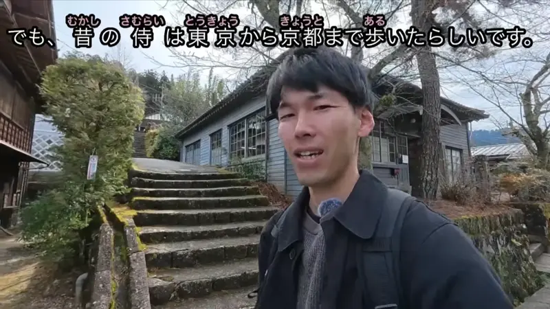
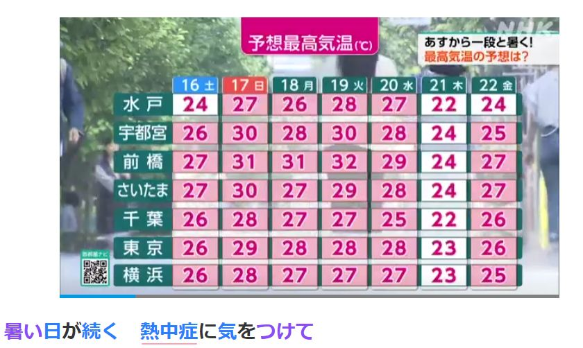
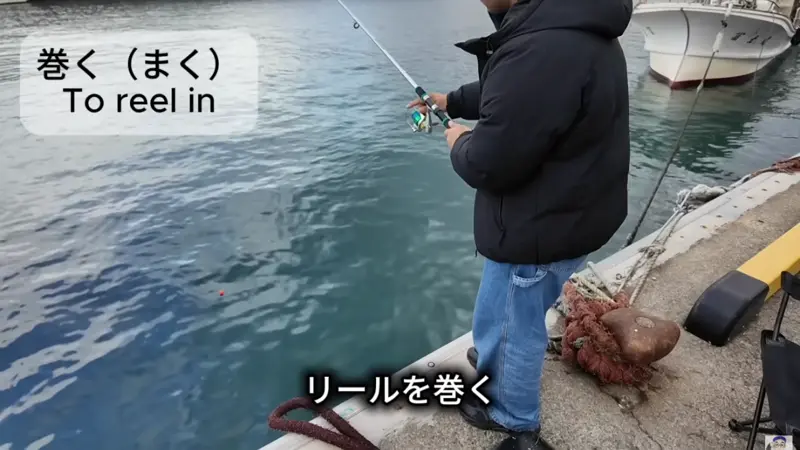

まで

YouTube · video
でも、昔の侍は東京から京都まで歩いたらしいです。
"But back then, samurai apparently walked all the way from Tokyo to Kyoto."
まで means until, up to, as far as. It marks the end point, and it goes right after it: 京都 + まで = "as far as Kyoto".
It often teams up with から (from): 東京から京都まで = "from Tokyo to Kyoto". The sentence answers "How far did they walk?": all the way to Kyoto.
まで is the same in polite and casual speech. The politeness comes from the end: らしいです here, らしい with friends.
Shirokuma Cafe · Episode 1
何時まで寝てるの
"How long are you going to sleep?"
まで works for time too: 何時 + まで = "until when". Casual, so just の at the end instead of んですか.
Examples
A friend asks about your work hours.
九時から五時まで働きます。
"I work from nine to five."
Time + まで: when something stops.
PoliteThe bus isn't coming and the station is close.
駅まで歩こう。
"Let's walk to the station."
Place + まで: how far you go.
CasualYour friend is still finishing their homework.
終わるまで待つよ。
"I'll wait until you're done."
Verb (dictionary form) + まで: until that thing happens.
CasualYour joke was so silly that the strict teacher laughed too.
先生まで笑った！
"Even the teacher laughed!"
Person or thing + まで can also mean even: it goes "as far as" the one you'd least expect.
CasualWith and without
七時に寝ます。
"I go to sleep at seven." に is one point in time: when it starts.
七時まで寝ます。
"I sleep until seven." まで is where the sleeping ends.
Sentence mining
YouTube · video
宅急便の人が、自分の家まで届けてくれるじゃないですか。
"The delivery person brings it all the way to your house, right?"
自分の家まで: the package goes as far as your own door.

NHK News Web Easy · article
15日は、北海道から九州までの多くの場所で、気温が上がりました。
"On the 15th, temperatures rose in many places from Hokkaido to Kyushu."
北海道から九州まで: top to bottom of Japan. まで + の works like an adjective: "the places from Hokkaido to Kyushu".

YouTube · video
下まで押してったら、あのリールを巻く。
"Once you've pushed it all the way down, you wind that reel."
下まで = "to the bottom". Not just down a bit, all the way.
YouTube · video
でも、手前に1人いるぐらいか。こっちの家まで、引っ張ってこれればいいんだけどな。
"But there's maybe just one in front. I wish I could lure it over to this house."
こっちの家まで: the goal is to get it as far as this house.